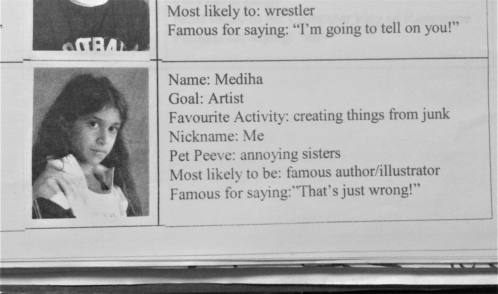

My grade 4 class had a yearbook.

We were allowed to fill in our own sections.

Yup, that was me - Mediha Munim. I was too cool to smile back then (how times have changed!).
I loved to create things - artwork, crafts, origami and more - but I loved to create things from junk even more. The concept of taking useless objects and giving them value was fun, challenging, and felt productive.
I continued to produce artwork for years, evolving my creativity and improving the quality of my work. However, I didn't know what I wanted to pursue in life. I no longer wanted to become an artist or an author.
My first experience coding was in grade 11. I enrolled in a computer science course at my high school. Slowly, I began to understand the ingenuity of computer programming, the art of Creating from Nothing. I could literally create infinite programs with just my laptop. I didn't need anything else - not even junk. I was hooked. I worked with a partner to create my first game with Processing.
I graduated high school. It was summer, and I had accepted my offer to study science at McMaster University because I still didn't know what I wanted to do for a living. Since I had some time on my hands, I thought I would have some fun programming again. I spent over 100 hours creating a one-minute long RPG game from scratch, again in Processing. This time, I made the (somewhat lacking) art assets. The terrible humour was mine as well.


I needed to switch programs. Since I had a passion for creating things, I looked into engineering. Since I had enjoyed working on my game over the summer, I switched into software engineering.
During my second year at McMaster, I independently and collaboratively created a vast range of programs. I created my first websites using HTML and CSS, learned to code in Java and Python, grew familiar with data structures/algorithms, Linux, LaTex and Git and understood what it means to be a software engineer. A few of my projects, including Green Light and Battleship, can be found on my GitHub.
During third year, I continued to learn about software documentation, testing, databases, SQL, concurrency and more. I worked with groups to create two fully-functional programs.
The first was called ReTouch - an implementation of the existing software KTouch in Java. I was the lead programmer and implemented the main functionality of the typing tutor program.

The second project was called uVibe, an Android application that connects to a user's Spotify account and provides an emotional analysis of their songs. I was the team leader and made significant contributions to the application's documentation and front-end development.


Finally, I created this website. I am eager to learn more things and continue to add more here.